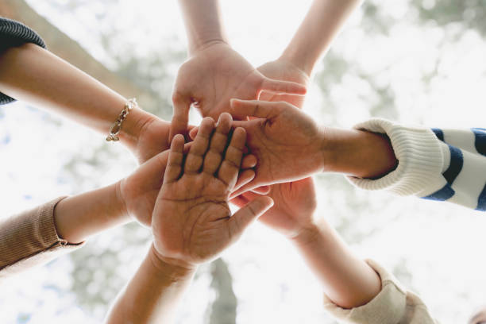
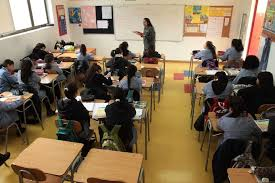

¡La energía se vive fuera del aula! Actividades extraprogramáticas en el Colegio Nuevo Horizonte
En el Colegio Nuevo Horizonte, creemos que la formación integral de nuestros estudiantes va más allá de las clases. Por eso, este año hemos potenciado nuestras actividades extraprogramáticas, entregando a nuestros alumnos diversas oportunidades para descubrir sus talentos, compartir con sus compañeros y desarrollar nuevas habilidades.
Entre las opciones disponibles, destacan talleres como música, arte, ajedrez, ciencia divertida, y por supuesto, atletismo, una disciplina que ha despertado gran entusiasmo entre nuestros estudiantes.
El taller de atletismo no solo promueve la actividad física, sino que también fortalece valores como la perseverancia, el trabajo en equipo y la superación personal. ¡La pista se ha transformado en uno de los espacios más activos del colegio!
Estas instancias no solo complementan el aprendizaje académico, sino que también contribuyen a una vida escolar más feliz y equilibrada.
¡En el Colegio Nuevo Horizonte, el aprendizaje no termina cuando suena la campana!

Programa de Integración Escolar Refuerza Apoyo a Estudiantes Neurodivergentes
Nuestro Programa de Integración Escolar (PIE) continúa desarrollando estrategias inclusivas para acompañar a estudiantes neurodivergentes. A través de adaptaciones curriculares, talleres sensoriales y el trabajo colaborativo entre docentes y especialistas, buscamos que cada estudiante aprenda a su ritmo y en un ambiente respetuoso.
“La diversidad nos enriquece”, comentó una de las educadoras diferenciales del colegio.
Agradecemos a las familias por su compromiso y confianza en este proceso educativo inclusivo.

Estudiantes del Colegio Nuevo Horizonte Destacan en el SIMCE 2024
nuestros estudiantes de 4° básico y 2° medio obtuvieron excelentes resultados en la prueba SIMCE, especialmente en las áreas de Lectura y Matemáticas. El equipo docente y directivo del colegio felicita a todos los estudiantes por su compromiso, así como a las familias por el apoyo constante. Estos resultados reflejan el trabajo en equipo y la dedicación de nuestra comunidad educativa.
¡Seguimos avanzando juntos en la formación integral de nuestros estudiantes!.

Cuidemos Nuestra Mente: Inicia Campaña de Salud Mental en el Colegio Nuevo Horizonte
Durante el mes de abril, nuestro colegio ha lanzado una campaña enfocada en la salud mental de nuestros estudiantes. Charlas, talleres y espacios de conversación han sido organizados para promover el autocuidado, la empatía y el bienestar emocional.
“Queremos que nuestros estudiantes se sientan escuchados, acompañados y seguros”, explicó la orientadora escolar.
Invitamos a padres, apoderados y estudiantes a participar activamente de las actividades programadas durante el mes.
.avif)